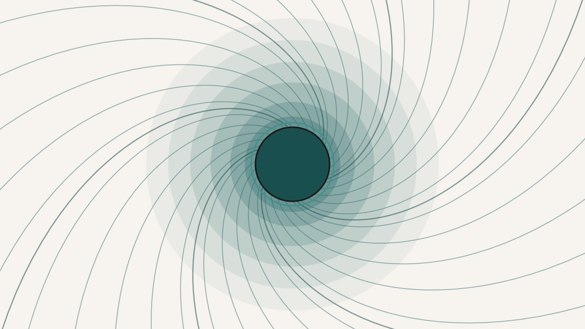

What If Space Flows Like a River Past the Event Horizon?
The trouble with "spacetime curvature" is that nobody can picture it. It is the correct answer, and it is also a phrase that does most of its work by sounding authoritative rather than by showing you anything. So I have always been drawn to a different way of describing the same physics, one you can actually see in your head: space is not curved so much as flowing, pouring inward toward a massive body like water toward a drain, faster the closer you get. This is the river model of black holes, and the thing I wanted to do with a student was take it seriously enough to check it against data — not near a black hole, which is inconvenient, but twenty thousand kilometres above our heads.
The river picture is not a rival to general relativity. It is general relativity, written in a different set of coordinates. If you take the usual Schwarzschild description of the space around a non-rotating mass and change the time coordinate — from the time kept by a distant observer to the time kept by someone falling freely inward from rest — the arithmetic rearranges itself into Painlevé–Gullstrand form, and in that form space behaves like a medium with a velocity. At radius r the inward flow speed is exactly the Newtonian escape velocity, vflow(r) = √(2GM/r), which is a small miracle of tidiness: the speed you would need to climb out is the speed at which space is falling in. The two are the same number because they are the same fact seen from two sides.
The metaphor pays off at the horizon. Think of light as a fish that can only ever swim at speed c through the water around it. Far from the hole the water is nearly still, so an outward-swimming fish makes easy progress. As it approaches the hole the inward current quickens, and the fish's ground-speed drops. At the event horizon the current reaches c exactly: now an outward-swimming photon, going flat-out, exactly treads water and never advances. Cross inside and the current runs faster than light — not because anything locally is breaking the speed limit, but because the "flow" is a property of the coordinates, not a thing you could clock as it went past. That is the whole reason the horizon is one-way, told without a single tensor.
You can watch it happen in the tilt of the local light cones.
Light cones in the river picture. Far from the hole (right) a cone is symmetric: light can go either way. As the inward flow quickens the cone tips toward the hole; at the horizon the outgoing edge stands perfectly vertical — an outward photon treads water — and inside it, both edges point inward, so every future leads to the centre. The one-way horizon is just the moment the current outruns light.
All of this is a picture, though, and a picture proves nothing. Because the river model is Schwarzschild's geometry in disguise, no observation could ever favour one over the other; they are the same theory. So the honest question is narrower and, I think, more interesting: if you actually implement the river bookkeeping as a computer program and run it on real data, does it reproduce the standard relativistic answer — and if it doesn't, can you predict in advance exactly how it will fail?
The place to try this is GPS. Every satellite in the constellation carries an atomic clock, and those clocks tick at a slightly different rate from clocks on the ground — faster, because they sit higher in Earth's gravity, and slower, because they are moving, with the gravitational effect winning by a wide margin. The standard accounting splits the clock-rate offset into a gravitational-redshift term, δgrav = (GM/c²)(1/R⊕ − 1/r), and a kinematic time-dilation term, δkin = −v²/2c². The river accounting does something that looks completely different. It says: forget potential and velocity separately; just ask how fast the satellite is moving relative to the inflowing river of space. At GPS altitude that river is running inward at about 5.5 kilometres per second. Compute the satellite's speed through the current, apply one time-dilation formula to that "swim speed," and you are done.
We fed both pipelines the same thing — an ordinary precise-orbit file giving the positions of all thirty-two GPS satellites every five minutes over a two-hour window — and let them each compute the clock-rate offset epoch by epoch. Then we subtracted one series from the other.
They did not agree to zero. And that is where the essay actually starts, because for a while a non-zero residual looks exactly like a bug. The clock-rate offset itself is about 4.7 × 10−10; the leftover between the two methods sat at around 10−12, roughly two-tenths of a percent of the signal. Small, but stubbornly present, and structured — it wobbled up and down with the orbit rather than scattering like numerical noise. The temptation is to go hunting for the mistake.
There is no mistake. If you take the river formula and expand it algebraically in the weak-field limit, it comes apart into exactly the gravitational term, exactly the kinematic term, and one extra piece: −vflow(r) (v·r̂)/c², a term proportional to the satellite's radial velocity — how fast it is climbing or falling through the current. That is the residual. Not approximately; the per-epoch leftover matches this closed-form expression at a correlation of 1.000, across all thirty-two satellites. It even has the right shape: because the radial velocity peaks when a satellite is nearest Earth, the residual is largest for the satellites on the most eccentric orbits, and its size — a couple of parts in 1012 — is what you get by plugging their eccentricities into the formula. The two bookkeepers were never going to give identical numbers, because they keep time in slightly different coordinates, and the gap between their clocks is a quantity you can write down on paper before running either one.
That is the payoff, and it is a conceptual one rather than a discovery. Nothing here tests general relativity — both pipelines are the same physics, so of course they mostly agree. What the exercise shows is subtler and, to me, more satisfying: a way of seeing gravity as flow, invented to make a black hole's horizon intuitive, survives all the way down to the undramatic setting of a satellite clock, and where it parts company with the textbook method it does so by precisely the term its change of coordinates predicts. The river runs from the event horizon to low Earth orbit, and the books balance to a part in a trillion.
An honest caveat that should go before any stronger claim
The scope here is narrow and worth stating plainly. Everything quantitative lives in the weak field, with satellites treated as test particles too light to bend spacetime themselves, and with Earth approximated as a simple non-rotating Schwarzschild mass. That last approximation quietly discards the effects of Earth's oblateness and its rotation (frame-dragging); those are real, but they enter the difference between the two pipelines only at the level of 10−15 or below — a thousand times under the residual we care about — because both methods sit on the same Schwarzschild background and the corrections cancel. So the GPS result should not be oversold: it does not confirm the strong-field claims the light-cone picture illustrates, and because both pipelines are deterministic computations from one ephemeris file, it is not an independent measurement of relativity at all. It is a consistency check — a demonstration that two coordinate systems, one of them shaped like a flowing river, agree to the exact term the coordinate change between them requires. The strong-field version, where the river really earns its keep, is the thing a next project would have to reach.